Godspower Emmanuel
President
Jesus Revealers • 2026/2027 Session
Every time God gives a prophetic theme to a people, it is more than a slogan — it is a heavenly commission and an unveiling of what He desires to establish in a generation. For this season, the mantle rests upon The Apostolic Generation, carrying the divine mandate as Jesus Revealers.
Anchored deeply on the great commission of Matthew 28:18–20 and Acts 1:8, this administration is set apart to see every student across Oduduwa University transformed by the revelation of Jesus Christ — manifesting the Kingdom of God in power, holy culture, and purposeful academic excellence.
“One thing is clear: when the light of Jesus Christ is genuinely revealed through a consecrated generation, no ordinary student remains untouched.”
The central executive council of CACSA OUI for the 2026/2027 session, raised and consecrated to steward the various fellowship ministries, service departments, and spiritual activities.
President
Vice-President / Brothers’ Coordinator
General Secretary
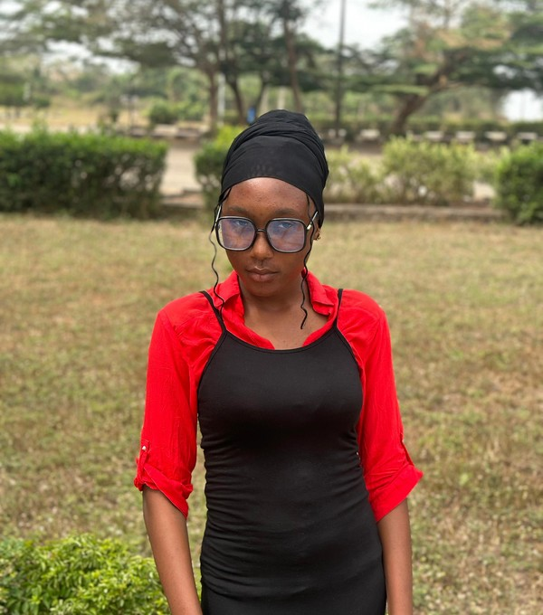
Financial Secretary / Academic Coordinator
Prayer Coordinator
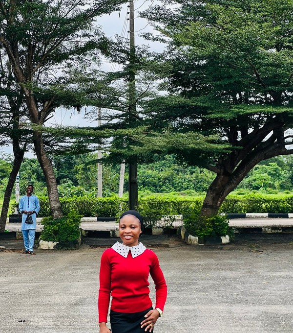
Sisters’ Coordinator
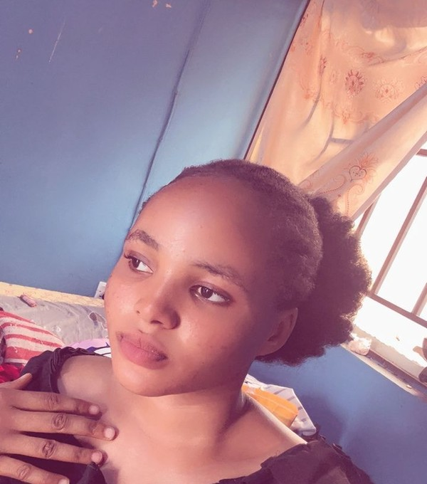
FFS Principal
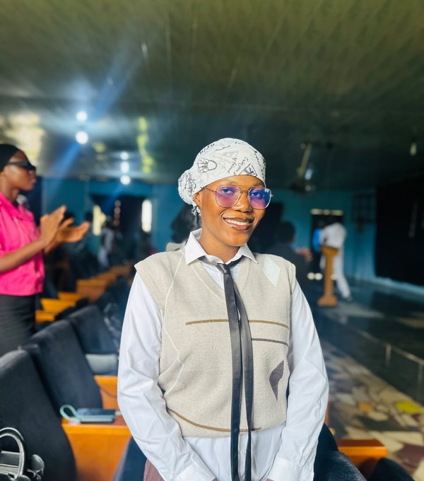
Bible Study & Sunday School Coordinator
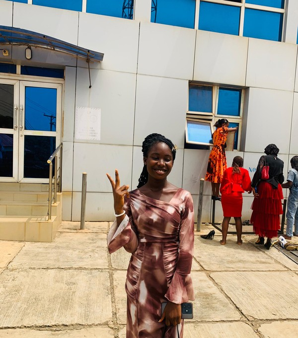
Evangelism Coordinator
Music Director
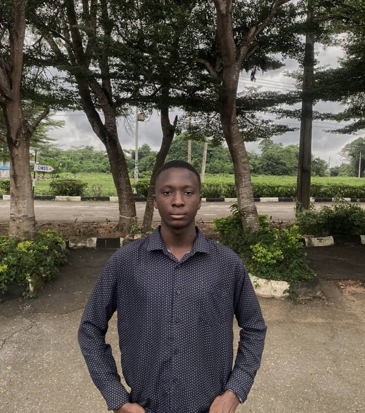
Media Coordinator / SFRO
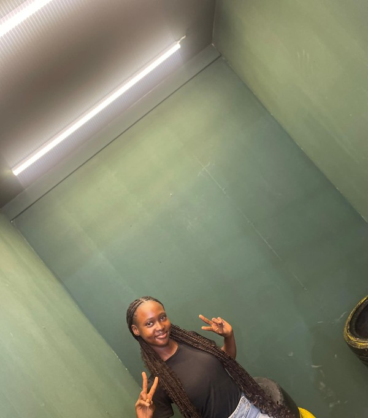
Ushers’ Coordinator
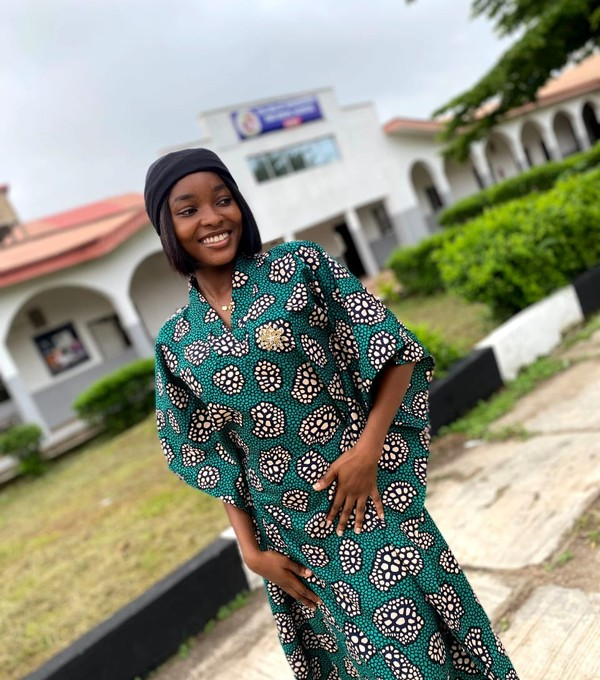
Welfare Coordinator
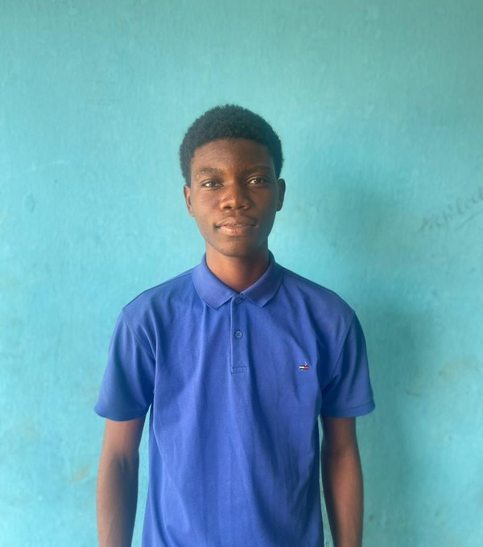
Organizing Coordinator
Technical Coordinator
Decorating Coordinator
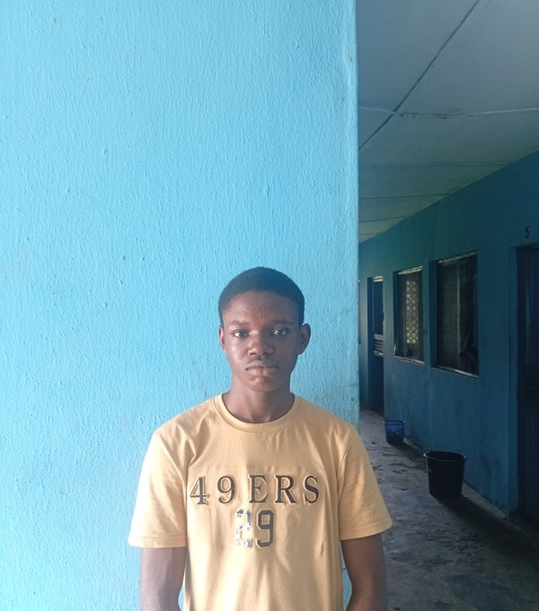
Assistant General Secretary
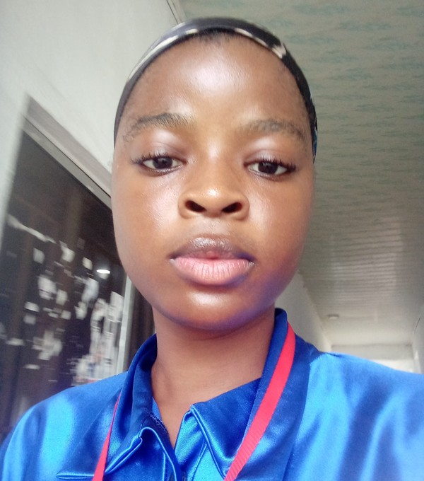
Assistant Prayer Coordinator
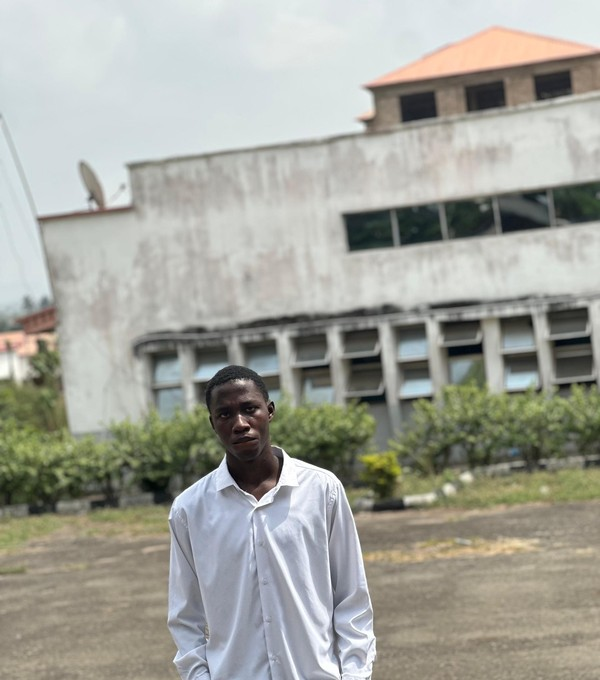
Assistant Welfare Coordinator
Assistant Technical Coordinator